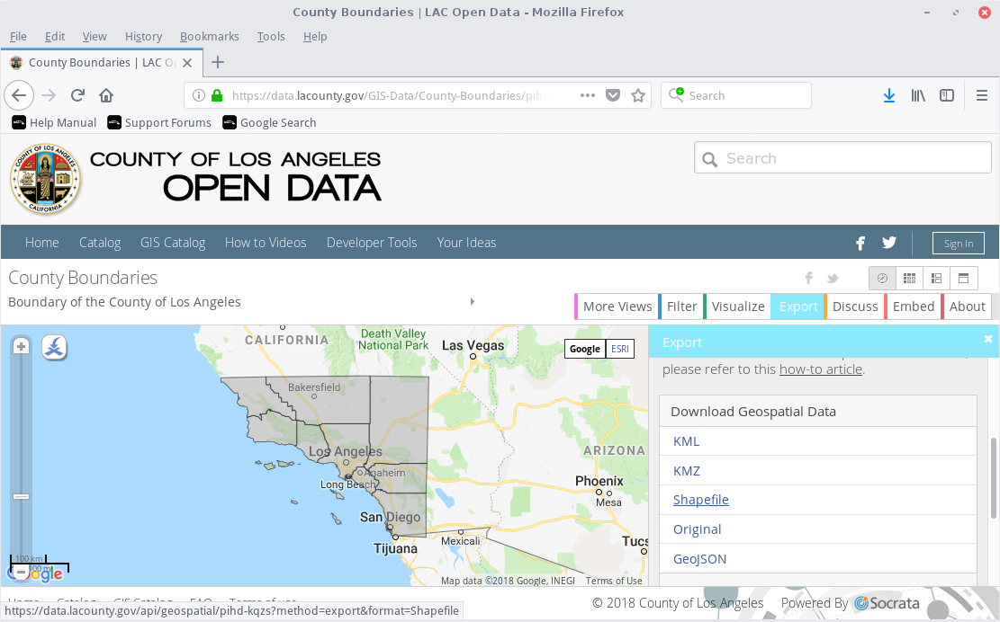
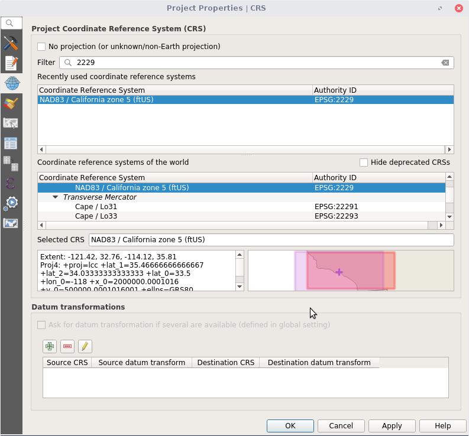
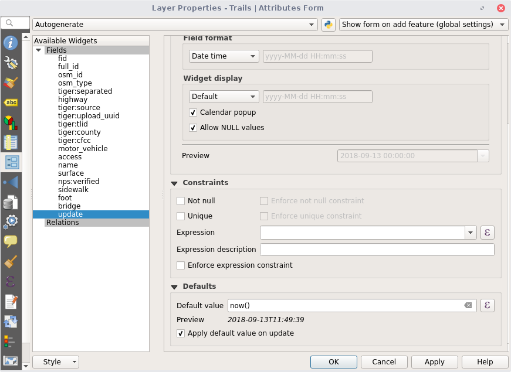

Thank you
to Arup for the space!

MaptimeLA presents:
What's new in QGIS?
#maptimeLA
QGIS is a free, open source, geographic information system software.
Today we will walk through the QGIS interface touching on some of the recent upgrades.
You will want to have QGIS version 3.2 to follow along: QGIS Download
Today's Topics
Task 1: Add data
Task 2:
Task 3: Query data
Task 1: Add data
County data was downloaded from the LA County open data site: County Boundary Download
Let's apply the local coordinate system. Search for 2229. Notice the new preview window.

You can have fields auto-update based on an expression. Create an update field and set default to now()

We're done w/ the tutorial, but now you should experiment! Modify these tasks to use different data. Then try other tools.
Inspiration from:
> https://github.com/maptime/postgis-101
> http://duspviz.mit.edu/tutorials/intro-postgis.php
Please join us for our next
#maptimeLA meeting!
Until then, chat w/ us on Slack!